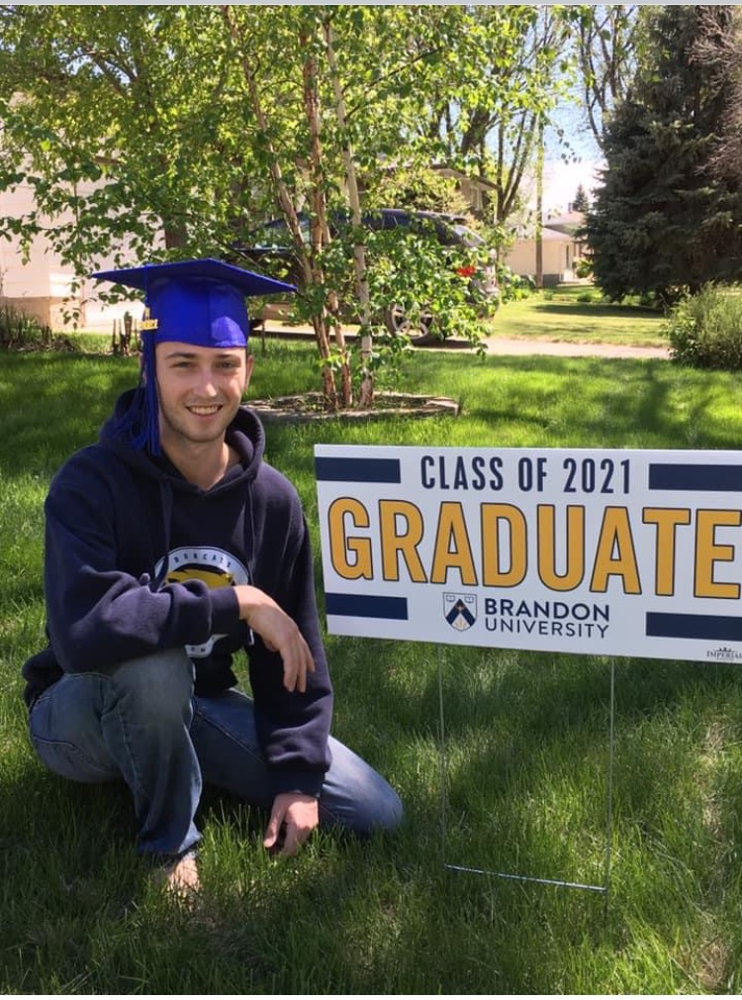
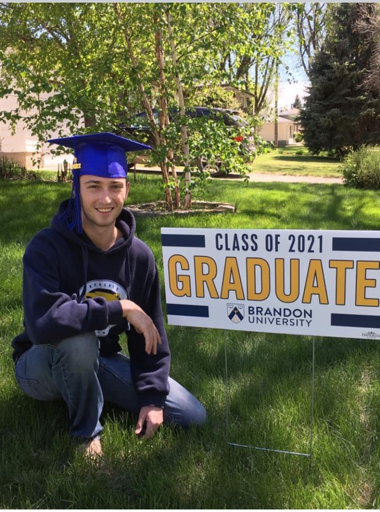
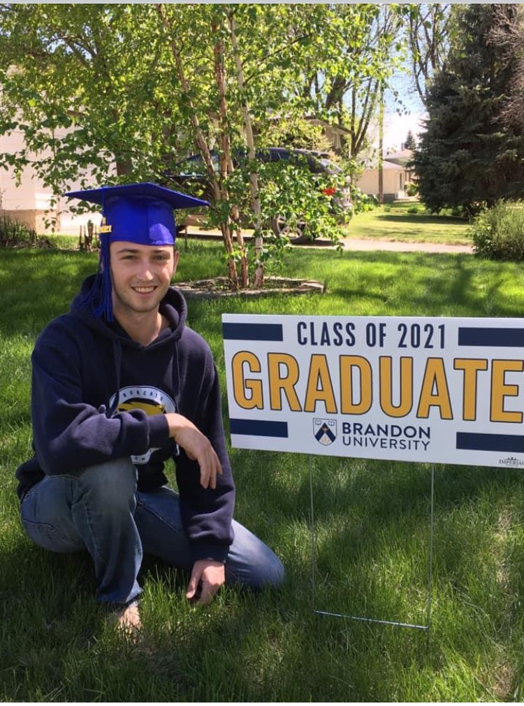

Owen graduated from his hometown of Brandon University in 2021. While at BU he pursued every class he was interested using his electives to smaple psychology, philosophy, sociology, gender and women's studies, as well as higher level math and physics not required for his degree. When he wasn't in class he enjoyed participating in various clubs such as Enactus where his public speaking skills helped them win several regionals awards advancing to nationals, and sports playing on the BU curling team.
Owen is currently pursuing a MMath degree at the University of Waterloo focusing on AI and Ethics. His current research investigates using a users personality to cator an explanation. At Waterloo he also has done projects on Deep Learning for CRISPR Technology, and developing software to cator product descriptions to different devices. Owen also enjoys pursuing any project that interests him from building websites to creating genetic algorithms to play games he invented. Outside of School Owen has been a part of intramural dodgeball and soccer teams, as well as the club quidditch team. Owen also enjoys losing to his friends at chess and playing his violin.
